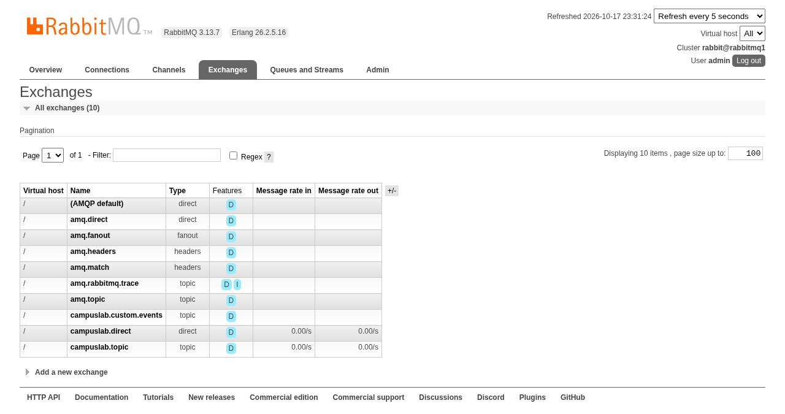
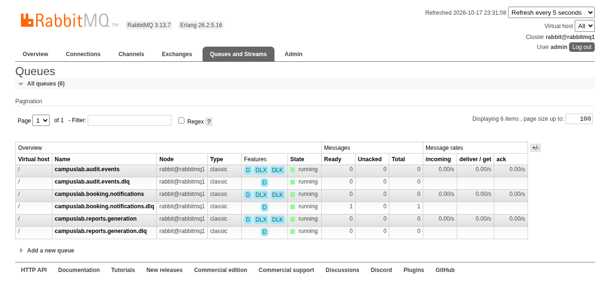
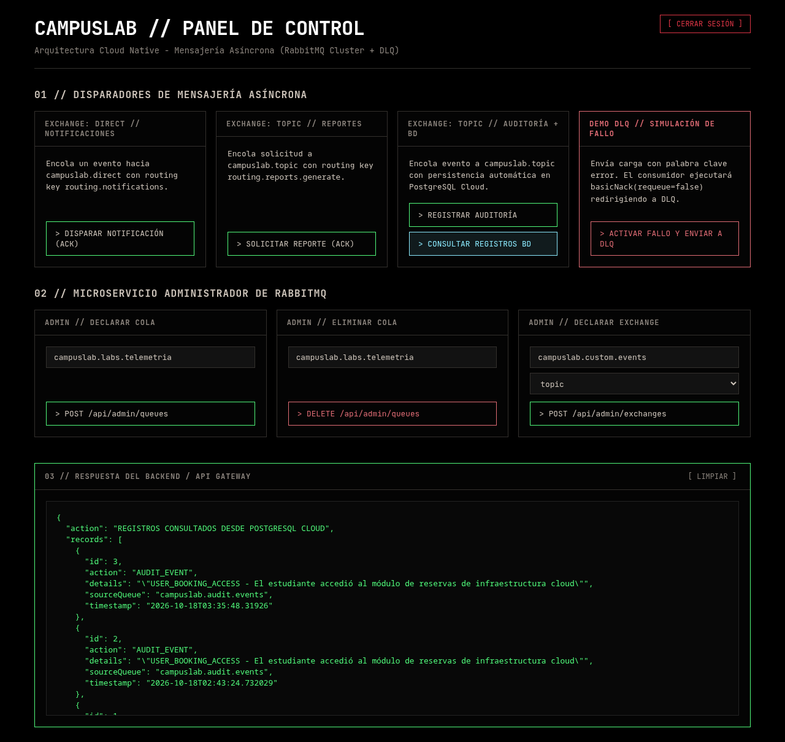

Alta Disponibilidad AMQP
Nodos rabbitmq1 y rabbitmq2 sincronizados mediante Erlang Cookie compartida en Docker Compose.
ACK Manual + Dead Letter
Confirmaciones estrictas con basicAck() y redirección automática ante fallos (basicNack) a sus 3 colas Dead Letter.
Microservicio Administrador
API REST desacoplada (RabbitAdminService) para crear y eliminar colas, exchanges y bindings con validación DTO.
En EP2 consolidamos la identidad con Azure Entra ID y el API Gateway. En esta etapa (EP3/EP4), el foco exclusivo es eliminar el bloqueo HTTP y garantizar resiliencia absoluta.
channel.basicAck() una vez ejecutada la lógica.Dos nodos orquestados en Docker Compose con alta disponibilidad, balances de carga y tipología Direct & Topic.
Enrutamiento determinístico con clave exacta routing.notifications hacia tareas transaccionales.
Permite enrutamiento jerárquico con comodines (#) hacia múltiples consumidores independientes.
Esquema sincronizado en ambos nodos. Si un nodo cae, los productores continúan operando en el segundo nodo.
Configuración en AcknowledgeMode.MANUAL. Explicación del ciclo de vida ante procesamiento exitoso y ante excepciones no controladas.
1. Llega el mensaje al consumidor funcional:
@RabbitListener(queues = "${campuslab.rabbitmq.queues.notifications}")
public void process(String msg, Channel ch, @Header(...) long tag) {
try {
// Lógica de negocio (notificación, guardado)
ch.basicAck(tag, false); // Confirmación exitosa
} ...
}
2. Ante error imprevisto o carga corrupta:
} catch (Exception e) {
log.error("Fallo detectado: {}. Enviando a DLQ", e.getMessage());
// requeue = false para transferir automáticamente a DLQ
ch.basicNack(tag, false, false);
}
requeue=false impide el bucle infinito de reintentos venenosos (Poison Message).x-dead-letter-exchange de la cola..dlq para análisis forense."error", el sistema ejecuta NACK y lo deposita en la DLQ en < 50ms.Desacoplamiento total entre infraestructura y controladores. Gestión declarativa con DTOs validados y lógica encapsulada en RabbitAdminService.
POST /api/admin/queuesDELETE /api/admin/queues/{name}POST /api/admin/exchangesPOST /api/admin/bindingsRabbitAdminService.java
El controlador REST desconoce por completo las clases internas de AMQP (RabbitAdmin, ConnectionFactory). Toda la gestión se expone en métodos limpios de alto nivel:
public void createQueue(String name, boolean durable) public boolean deleteQueue(String name) public void createExchange(String name, String type) public void createBinding(String q, String ex, String key)
QueueDto.java / ExchangeDto.java
@NotBlank: Impide nombres nulos o vacíos.@Size(min=3, max=255): Longitud controlada.@Pattern(regex="^[a-zA-Z0-9._-]+$"): Bloquea inyecciones o caracteres inválidos en el broker.@Pattern(regexp="^(direct|topic|fanout)$"): Valida tipos de exchange soportados.Evidencia fotográfica tomada directamente desde los servidores cloud en vivo (AWS EC2 + Azure Entra ID + RabbitMQ Console).

campuslab.direct y campuslab.topic operativos.


estudiante@CampusLabFinal ejecutando triggers en vivo.
restart: unless-stopped).
CampusLabFinal.
Guion interactivo para ejecutar en vivo frente al docente en las consolas cloud activas.
Login OAuth2 + PKCE
Abrir https://52-200-87-76.sslip.io, ingresar con estudiante@CampusLabFinal y mostrar redirección segura con JWT emitido.
Consola 15672
Mostrar en 52.200.87.76:15672 los 2 nodos (rabbitmq1 y rabbitmq2), exchanges direct/topic y las 3 colas de negocio.
Disparar Notificación
Presionar "Disparar Notificación" (ACK inmediato) y "Registrar Auditoría" mostrando el registro persistido en la base de datos PostgreSQL Cloud.
Demostración Resiliencia
Presionar "Activar Fallo y Enviar a DLQ". Mostrar en la consola de RabbitMQ cómo la cola normal queda limpia y el mensaje viaja a la DLQ.
Todos los servicios se encuentran en estado OPERATIVO & ACTIVO